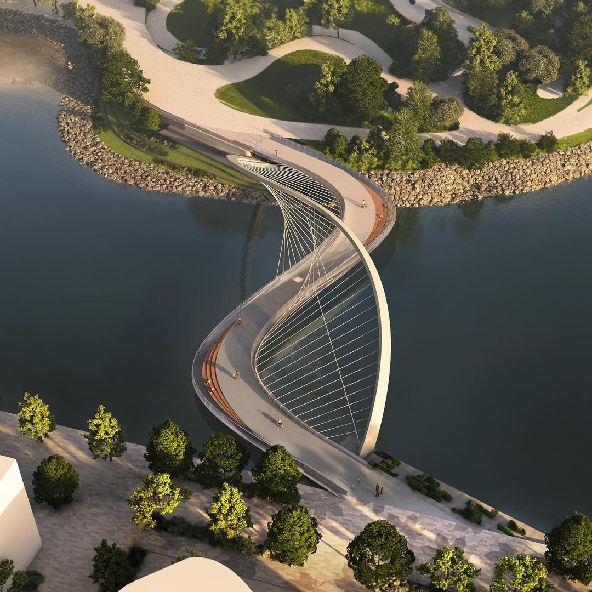
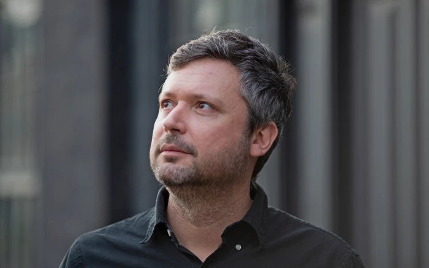
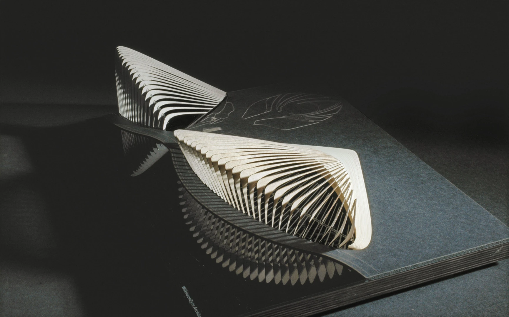
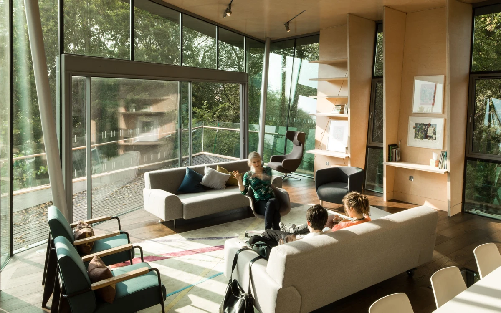
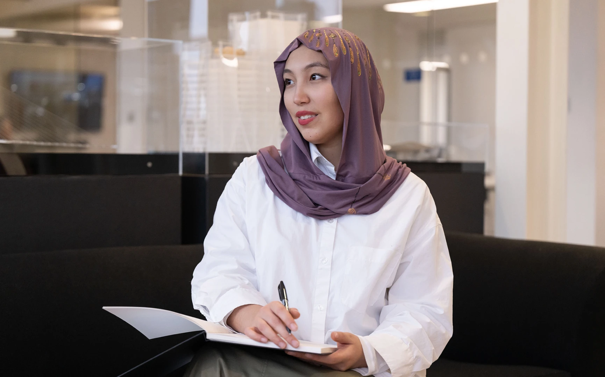
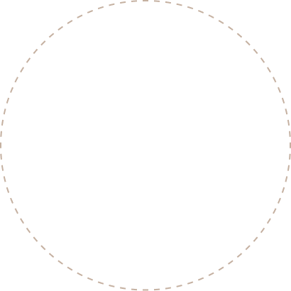

We have built some of the worlds most recognisable landmarks
Driven by a passion for architecture of the highest quality, we craft buildings of durability and delight. Our studios around the world design buildings that please clients and excite users. Our global portfolio includes Gardens by the Bay in Singapore and Crown Sydney, a luxury destination hotel for Australia.
Team
We craft buildings of durability and delight
Our global portfolio includes Gardens by the Bay in Singapore and Crown Sydney, a luxury destination hotel for Australia. We have spectacularly restored London’s Battersea Power Station, turning an industrial ruin into a new neighbourhood and visitor attraction, and have built headquarters and campuses for Dyson, Wellcome Trust, Deutsche Bank, CIBC, Munich RE, Facebook and Apple.
Meet the team
Approach
Our a rich resource is the ability to explore engineering potential and technology.


We take a participatory approach to the brief, working with client and user groups, and promoting a spirit of exploration and enquiry.
Design Brief
Every project starts with listening. We work closely with clients and future users to understand their ambitions, constraints and the character of the place.
The brief grows through workshops and research, so that the building answers real needs and leaves room for new ideas.

Design Journey
From the first sketches to the finished building, we explore form, structure and materials together with engineers and makers.
Models, prototypes and digital tools let us test ideas early and refine them at every stage of the journey.

Design for People
People need to be at the heart of our design, and we see our community as having a number of constituencies.
The intended user; the client body and the daily occupants and visitors to our buildings.
Those in the vicinity experiencing the building in its wider context; considering and taking responsibility for economic, societal and environmental impacts of construction and operation.
Our peers in practice, other construction partners and the next generation of architects; contribute to best practice, architectural education and efforts to make the profession more accountable and representative of wider society.

Sustainability
At WilkinsonEyre we believe that innovation, collaboration and good design can further sustainability goals.
Since the inception of the practice in 1983, we have consistently pushed the integration of architecture, engineering and technology. We seek to optimise the synergy between good aesthetics, structure, and environmental design, to draw out the best aspects of each with elegance and economy.
This ethos has driven WilkinsonEyre to deliver innovative, efficient and beautiful design solutions that achieve a balance between ethical, environmental, social and economic sustainability.
We embrace the fundamental principle of “doing more with less” that inspired the high-tech architectural movement and have successfully interpreted this philosophy to design for the urgent environmental needs of the 21st Century.

1983

We have been successfully implementing architectural projects for more than
40 years
2024